Histoire et éducation à la citoyenneté
08 / 12 réalité sociales
L'expansion européenne dans le monde
XVe au XVIIe siècle · Les grandes explorations
- colonisation
- culture
- économie-monde
- empire
- enjeu
- esclavage
- Grandes découvertes
- technologie
Mise en contexte
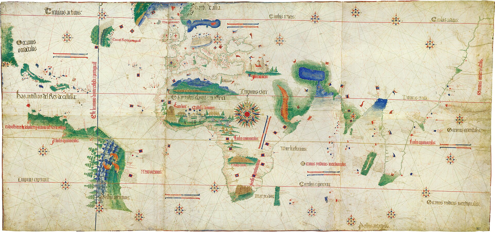
Source
anonymous Portuguese (1502), Cantino planisphere (1502), Wikimedia Commons. Licence : Domaine public.Le contexte culturel et économique de la Renaissance favorise un vaste mouvement d'exploration et de colonisation. Les réseaux d'échange qui se mettent en place entre les métropoles européennes et leurs colonies constituent une première forme d'économie-monde. Les territoires et les sociétés colonisés, en Afrique ou en Asie, sont profondément affectés par l'arrivée des Européens. L'étude de la colonisation et de ses conséquences politiques et économiques permet de saisir la portée des relations économiques à l'échelle mondiale.
Concepts à l'étude
- Colonisation : la prise de possession d'un territoire par un pays étranger, qui l'exploite et y impose son autorité.
- Culture : les croyances, les langues et les manières de vivre d'une société, bouleversées par la rencontre entre les peuples.
- Économie-monde : un vaste réseau d'échanges qui relie plusieurs continents autour d'un centre dominant.
- Empire : l'ensemble des territoires soumis à l'autorité d'un même État.
- Enjeu : ce qu'on peut gagner ou perdre dans une situation, par exemple l'accès aux épices ou aux métaux précieux.
- Esclavage : la condition d'une personne traitée comme une marchandise, privée de liberté et forcée de travailler sans salaire.
- Grandes découvertes : les expéditions maritimes européennes des 15e et 16e siècles qui font connaître de nouveaux territoires aux Européens.
- Technologie : les inventions et les techniques, comme la caravelle ou l'astrolabe, qui rendent les longs voyages possibles.
Situer dans le temps
* La plupart des historiens fixent la fin du Moyen Âge en 1492, avec l'arrivée de Christophe Colomb en Amérique. D'autres retiennent plutôt 1453, l'année de la prise de Constantinople par les Ottomans, qui met fin à l'Empire romain d'Orient. Les deux dates se défendent : elles marquent toutes deux un basculement du monde connu des Européens.
Les connaissances scientifiques évoluent
La période de la Renaissance, comme nous l'avons vu au chapitre précédent, amène une nouvelle vision de l'Homme, mais aussi de sa conception du monde et de l'Univers. De nouvelles théories ont ainsi été développées en astronomie.
En effet, depuis l'Antiquité, la théorie du géocentrisme, qui place la Terre immobile au centre de l'Univers, est communément acceptée. Cependant, Copernic, un prêtre polonais, élabore la théorie de l'héliocentrisme lors de la Renaissance. Rappelons que cette théorie place le Soleil au centre de l'Univers. Galilée appuie l'idée de Copernic grâce à sa lunette astronomique. Il affirme aussi que la Terre tourne sur elle-même tout en tournant autour du Soleil. Il sera finalement jugé devant le tribunal de l'Inquisition pour avoir soutenu les idées de Copernic sur l'héliocentrisme, et ses principaux ouvrages seront inscrits dans l'Index.
Kepler, pour sa part, ajoute que la Terre tourne autour du Soleil de manière elliptique. Finalement, Isaac Newton élabore la théorie de la gravitation universelle, ce qui explique pourquoi la Lune ne tombe pas sur la Terre lors de sa rotation autour de celle-ci.
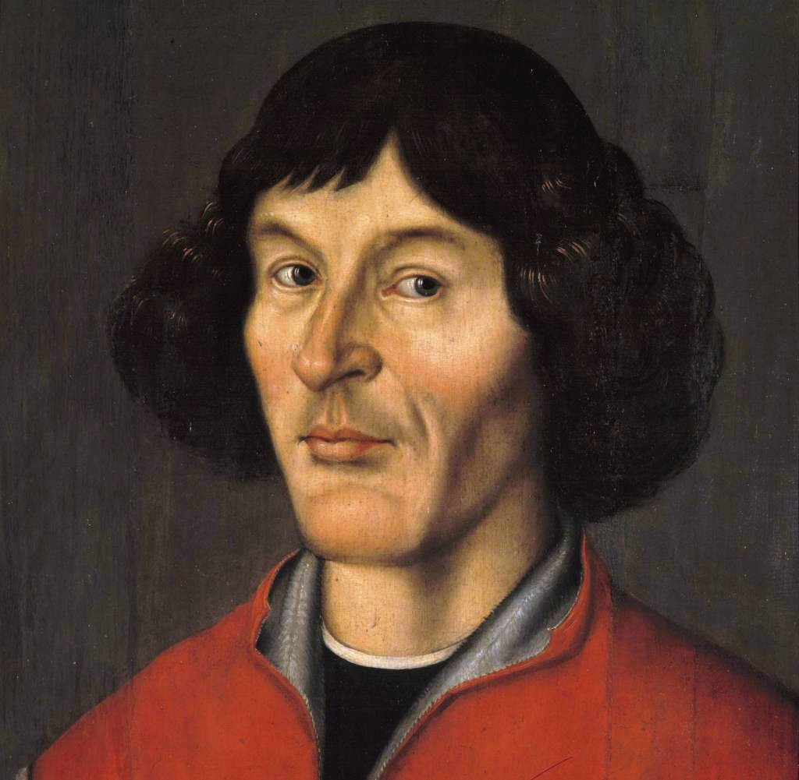
Source
Unknown author Unknown author, Nikolaus Kopernikus, Wikimedia Commons. Licence : Domaine public.Source
Justus Sustermans, Galileo.arp.300pix, Wikimedia Commons. Licence : Domaine public.Source
August Köhler [1], JKepler, Wikimedia Commons. Licence : Domaine public.La recherche de produits de luxe
Lors de la Renaissance, les monarques européens profitent des routes commerciales, telle que la route de la soie, afin d'obtenir des produits de luxe. Parmi les produits recherchés, il y a les épices, la soie et les métaux précieux.
Les épices Le poivre, la cannelle, le clou de girofle et la muscade sont les principales épices recherchées à cette époque. Très chères, elles donnent du goût aux plats des riches, qui montrent ainsi leur fortune à leurs invités. On s'en sert aussi comme médicament ou comme moyen d'échange. Contrairement à une idée répandue, elles ne servent pas à conserver la nourriture : pour cela, on sale, on sèche ou on fume les aliments.
La soie Les monarques européens ont développé un goût pour la soie, un tissu doux, léger et brillant. La Chine, qui l'a inventée, en a longtemps gardé le secret. Au 15e siècle, la Perse en produit aussi beaucoup. Les Européens se procurent cette soie d'Orient par la route de la soie. En Chine, on s'en est même longtemps servi comme monnaie.
Les métaux précieux En Europe, on manque d'or et d'argent depuis le 14e siècle. Les mines européennes et africaines sont épuisées, l'augmentation de la population oblige à émettre de plus en plus de monnaie et la guerre a vidé les coffres de plusieurs familles royales. Le Livre des merveilles de Marco Polo incite aussi les monarques à mettre la main sur les richesses de l'Orient.
La route de la soie
Ces produits viennent de très loin. Ils traversent l'Asie à dos de chameau ou l'océan Indien en bateau, en passant de marchand en marchand. Explore la carte pour voir d'où vient chaque produit, puis suis un sac de poivre pour comprendre pourquoi son prix grimpe à chaque étape du voyage.
La route de la soie et ses produits, vers 1450
Choisis un produit, une ville ou suis le poivre
- Route de terre (caravanes)
- Route de mer (navires)
- Ville ou port
- Lieu d'origine d'un produit
- 1 000 km
Des produits venus de très loin
Vers 1450, les épices, la soie et la porcelaine d'Asie arrivent en Europe par deux types de routes. Sur les routes de terre, les marchandises voyagent à dos de chameau, en caravanes. Sur les routes de mer, elles voyagent en bateau. On appelle ce réseau la route de la soie.
Presque aucun marchand ne fait tout le trajet. Les produits passent de main en main, de ville en ville. À chaque étape, leur prix augmente.
- Choisis un produit pour voir d'où il vient et le chemin qu'il suit.
- Choisis une ville ou un port pour découvrir son rôle.
- Suis un sac de poivre pour comprendre pourquoi il coûte si cher en Europe.
Le savais-tu? Le nom « route de la soie » date de 1877 : c'est le géographe allemand Ferdinand von Richthofen qui l'a inventé. De la Chine à la Méditerranée, la route de terre fait plus de 6 400 km. Des auberges fortifiées, les caravansérails, accueillent les caravanes tous les 30 à 40 km, la distance parcourue en une journée.
Le poivre
D'où vient-il?Les collines de la côte de Malabar, dans le sud-ouest de l'Inde.
À quoi sert-il en Europe?C'est l'épice la plus achetée en Europe. Les riches en mettent dans les sauces et les plats. Les médecins s'en servent aussi dans leurs remèdes.
Son cheminLe savais-tu? Le poivre noir vient d'une liane. On cueille ses petites baies, qui noircissent en séchant au soleil.
La cannelle
D'où vient-elle?L'île de Ceylan, l'actuel Sri Lanka.
À quoi sert-elle en Europe?On en met dans les plats sucrés et salés des riches, dans le vin épicé et dans les remèdes.
Son cheminLe savais-tu? Dans l'Antiquité, l'historien grec Hérodote racontait déjà que de grands oiseaux bâtissaient leur nid avec des bâtons de cannelle! Les marchands gardaient secret le pays d'origine de l'épice.
Le clou de girofle
D'où vient-il?Cinq petites îles des Moluques, dans l'actuelle Indonésie.
À quoi sert-il en Europe?Il parfume les plats et les sauces des riches. Il entre aussi dans de nombreux remèdes.
Son cheminLe savais-tu? Son nom vient du mot « clou », à cause de sa forme : une petite tête ronde au bout d'une tige.
La muscade
D'où vient-elle?Les îles Banda, dans l'actuelle Indonésie.
À quoi sert-elle en Europe?Les cuisiniers des riches en râpent dans les sauces et les desserts. On la croit aussi bonne pour la santé.
Son cheminLe savais-tu? Un seul fruit donne deux épices : la noix, à l'intérieur, puis le macis, une fine dentelle rouge qui l'entoure.
La soie
D'où vient-elle?La Chine, qui l'a inventée. Au 15e siècle, la Perse en produit aussi beaucoup, au bord de la mer Caspienne.
À quoi sert-elle en Europe?Les rois, les nobles et l'Église portent des vêtements et des ornements de soie, un tissu doux, léger et brillant. En Italie, des ateliers tissent de riches étoffes avec la soie importée.
Son cheminLe savais-tu? La soie est faite avec le fil du cocon d'une chenille, le ver à soie, qui se nourrit de feuilles de mûrier. Peu de marchands font tout le trajet : la soie passe de main en main, de ville en ville.
La porcelaine
D'où vient-elle?Les fours de Jingdezhen, dans le sud de la Chine.
À quoi sert-elle en Europe?Cette céramique blanche, fine et dure est presque inconnue en Europe. Les sultans d'Égypte en offrent aux doges de Venise comme de vrais trésors : 30 pièces au doge Foscari en 1442, 20 au doge Malipiero en 1461.
Son cheminLe savais-tu? Les Européens ne savent pas fabriquer la porcelaine. Ils n'y parviendront qu'au 18e siècle, en Allemagne.
Pierres précieuses et perles
D'où viennent-elles?Les saphirs et les rubis de Ceylan, les perles du golfe Persique.
À quoi servent-elles en Europe?Les rois, les reines et l'Église en ornent leurs couronnes, leurs bijoux et leurs objets sacrés.
Leur cheminLe savais-tu? Dans le golfe Persique, des plongeurs descendent chercher les huîtres perlières sans aucun équipement, en retenant leur souffle.
L'encens
D'où vient-il?Le Dhofar, au sud de l'Arabie, ainsi que la Corne de l'Afrique.
À quoi sert-il en Europe?Cette résine parfumée brûle en dégageant une fumée odorante. Les églises d'Europe en font brûler pendant les cérémonies.
Son cheminLe savais-tu? L'encens est la sève séchée d'un petit arbre, le boswellia, qui pousse dans des régions très sèches.
Les tapis
D'où viennent-ils?L'Anatolie (l'actuelle Turquie) et la Perse.
À quoi servent-ils en Europe?Trop précieux pour être posés par terre, les tapis d'Orient couvrent les tables et décorent les murs des palais et des églises. En 1464, le sultan Mehmet II en envoie 100 en cadeau au roi de Naples.
Leur cheminLe savais-tu? Des peintres de la Renaissance représentent souvent ces tapis dans leurs tableaux. Certains modèles turcs portent même leur nom : on parle de tapis « Holbein » ou « Lotto ».
L'or et l'argent
D'où viennent-ils?L'or vient surtout d'Afrique de l'Ouest. L'argent vient des mines d'Europe centrale.
À quoi servent-ils?L'Asie achète peu de produits européens. Pour payer les épices et la soie, les marchands d'Europe donnent surtout de l'argent et de l'or. Au 15e siècle, l'argent paie peut-être les deux tiers de ce que Venise achète en Orient. L'Europe manque donc de métaux précieux.
Vers l'OrientLe savais-tu? Ce manque d'or pousse les Portugais à explorer les côtes de l'Afrique : ils veulent atteindre directement les mines d'or, sans passer par les caravanes du Sahara.
Produits d'Europe
D'où viennent-ils?Les draps de laine de Flandre, d'Angleterre et d'Italie, le verre de Venise, le cuivre d'Europe centrale.
À quoi servent-ils?Les marchands européens vendent en Orient des draps de laine, du cuivre, du verre, du savon et du papier. Mais ces produits ne suffisent pas à payer tout ce qu'ils achètent.
Vers l'OrientLe savais-tu? À Bursa, les marchands italiens échangent surtout des draps de laine contre la soie de Perse.
La reine du commerce des épices
Au 15e siècle, Venise domine le commerce des épices en Europe. Chaque année, des convois de galères armées, organisés par l'État, vont chercher les épices à Alexandrie et à Beyrouth. Des marchands allemands viennent ensuite les acheter dans leur grand entrepôt du pont du Rialto, le Fondaco dei Tedeschi. Ils les emportent au nord des Alpes. Venise est aussi célèbre pour son verre, fabriqué dans l'île de Murano.
Produits échangés iciAujourd'hui : Venise, dans le nord de l'Italie. La ville et sa lagune sont inscrites au patrimoine mondial de l'UNESCO.
La grande rivale de Venise
Les marchands de Gênes possèdent des comptoirs autour de la mer Noire, comme Caffa. Ils ont même tout un quartier face à Constantinople : Péra. Ils cherchent aussi l'or d'Afrique. En 1447, le Génois Antonio Malfante traverse une partie du Sahara jusqu'à l'oasis du Touat pour savoir d'où vient cet or. Les navires de Gênes passent le détroit de Gibraltar pour aller vendre leurs marchandises jusqu'à Bruges.
Produits échangés iciAujourd'hui : Gênes, grand port du nord-ouest de l'Italie.
Le grand marché du nord de l'Europe
Du 13e au 15e siècle, Bruges est le principal centre de commerce du nord-ouest de l'Europe. Des marchands de Venise, de Gênes, de Florence, d'Angleterre et des villes allemandes de la Hanse y ont leurs maisons. On y vend surtout les célèbres draps de laine de Flandre. Les épices et la soie y arrivent par les galères italiennes ou par les routes des Alpes. Au bout du voyage, le poivre y coûte de 10 à 30 fois plus cher qu'en Inde.
Produits échangés iciAujourd'hui : Bruges, en Belgique. Son centre historique est inscrit au patrimoine mondial de l'UNESCO.
Le port qui cherche une autre route
Depuis le début du 15e siècle, les navigateurs portugais descendent peu à peu le long des côtes de l'Afrique. Ils cherchent l'or africain, puis une route par la mer jusqu'en Inde, pour acheter les épices sans passer par tous les intermédiaires. En 1498, Vasco da Gama atteint enfin Calicut, la ville du poivre.
Produits échangés iciAujourd'hui : Lisbonne, capitale du Portugal.
La ville de l'or, au bord du Sahara
Tombouctou se trouve au bord du Sahara, près du fleuve Niger. Les caravanes de chameaux y apportent le sel des mines du désert et repartent vers le nord chargées d'or. En 1324, Mansa Moussa, l'empereur du Mali, passe par Le Caire en route vers La Mecque. Il y distribue tant d'or que sa valeur baisse en Égypte pendant une douzaine d'années.
Produits échangés iciAujourd'hui : Tombouctou, au Mali. Ses grandes mosquées de terre sont inscrites au patrimoine mondial de l'UNESCO.
La porte entre deux mers
Capitale de l'Empire byzantin, Constantinople garde le Bosphore, le passage entre la mer Noire et la Méditerranée. Les marchands de Gênes vivent à Péra, de l'autre côté de la Corne d'Or. En 1453, le sultan ottoman Mehmet II prend la ville et en fait sa capitale. Les Ottomans contrôlent désormais le passage et font payer des taxes aux marchands.
Produits échangés iciAujourd'hui : Istanbul, la plus grande ville de Turquie.
Le marché de la soie des Ottomans
Première grande capitale des Ottomans, Bursa devient au 15e siècle le grand marché de la soie. Les caravanes y arrivent de Tabriz, chargées de soie brute venue des bords de la mer Caspienne. Les marchands italiens de Péra viennent l'acheter. Ils l'échangent surtout contre des draps de laine d'Europe.
Produits échangés iciAujourd'hui : Bursa, en Turquie. Son ancien quartier marchand est inscrit au patrimoine mondial de l'UNESCO.
Le comptoir génois de la mer Noire
En 1266, des marchands de Gênes obtiennent ce port de Crimée du khan mongol. Caffa devient le bout de la route qui traverse les steppes depuis l'Asie centrale. En 1346, la peste noire frappe l'armée mongole qui assiège la ville. Des navires génois emportent ensuite la maladie vers l'Italie, où elle arrive en 1347. Les Ottomans s'emparent de Caffa en 1475.
Produits échangés iciAujourd'hui : Féodossia, une ville de Crimée, au bord de la mer Noire.
Le grand port des épices
Au 15e siècle, c'est surtout à Alexandrie que les Européens achètent les épices. Les Vénitiens y ont des entrepôts, les fondaci, depuis le 13e siècle. Mais ils doivent payer le poivre au prix fixé par le sultan d'Égypte. Le kilo de poivre y vaut déjà de 10 à 14 grammes d'argent, près de dix fois plus qu'en Inde.
Produits échangés iciAujourd'hui : Alexandrie, deuxième ville d'Égypte, au bord de la Méditerranée.
La capitale du sultan mamelouk
Le Caire est la capitale du sultanat mamelouk, qui règne sur l'Égypte et la Syrie. En 1428, le sultan Barsbay décide que lui seul vendra le poivre aux Européens : ses agents achètent les épices puis les revendent au prix qu'il fixe. Les marchands égyptiens deviennent ses employés. Le commerce des épices enrichit le sultan.
Produits échangés iciAujourd'hui : Le Caire, capitale de l'Égypte et l'une des plus grandes villes d'Afrique.
Le marché des Vénitiens en Syrie
Damas est la grande ville du sultanat mamelouk en Syrie. Les Vénitiens y ouvrent un entrepôt, un fondaco, dès 1375. Les épices et les soieries arrivées par caravane y sont achetées puis envoyées à Beyrouth, le port où accostent les galères de Venise.
Produits échangés iciAujourd'hui : Damas, capitale de la Syrie et l'une des plus vieilles villes du monde.
Le port des galères de Venise
Beyrouth sert de port à Damas, de l'autre côté des montagnes du Liban. Chaque année, un convoi de galères vénitiennes vient y charger les épices, les soieries et le coton de Syrie.
Produits échangés iciAujourd'hui : Beyrouth, capitale du Liban.
Au bout de la route des caravanes
Les caravanes venues de Tabriz et de Bagdad aboutissent à Alep, l'une des plus grandes villes de Syrie. Ses souks couverts s'étendent sur des kilomètres. La soie, les épices et les pierres précieuses repartent ensuite vers les ports de la Méditerranée, où les attendent les marchands européens.
Produits échangés iciAujourd'hui : Alep, dans le nord de la Syrie. Sa vieille ville, inscrite au patrimoine mondial, a été gravement endommagée par la guerre à partir de 2012.
Le grand carrefour de la Perse
Tabriz est un immense marché. Des caravanes y arrivent d'Asie centrale, d'autres du golfe Persique avec les produits de l'Inde. La meilleure soie de Perse vient des bords de la mer Caspienne, tout près. Les caravanes repartent ensuite vers l'ouest : vers Bursa et Constantinople, ou vers Alep et la Méditerranée.
Produits échangés iciAujourd'hui : Tabriz, dans le nord-ouest de l'Iran. Son grand bazar est inscrit au patrimoine mondial de l'UNESCO.
L'ancienne capitale des califes
Pendant des siècles, Bagdad a été la capitale des califes abbassides et l'une des plus grandes villes du monde. En 1258, les Mongols la prennent et la ravagent. Au 15e siècle, des marchandises venues du golfe Persique remontent encore le Tigre jusqu'à Bagdad, puis partent en caravane vers Alep.
Produits échangés iciAujourd'hui : Bagdad, capitale de l'Irak.
Une île minuscule, un marché immense
Ormuz est une petite île sans eau douce, à l'entrée du golfe Persique. C'est pourtant l'un des plus grands marchés de l'océan Indien. On y échange les perles du Golfe, les chevaux d'Arabie et de Perse vendus en Inde, les épices, la soie et la porcelaine. En 1442, un ambassadeur perse note qu'on y paie une taxe d'un dixième sur toutes les marchandises, sauf l'or et l'argent.
Produits échangés iciAujourd'hui : L'île d'Ormuz, en Iran, dans le détroit par où passe aujourd'hui une grande partie du pétrole du monde.
Le port de La Mecque
Djeddah est le port de La Mecque, la ville sainte des musulmans. Sous le règne du sultan Barsbay, entre 1422 et 1438, l'Égypte oblige les navires de l'Inde à y décharger leurs épices plutôt qu'à Aden. Elle contrôle ainsi le commerce de la mer Rouge et ses taxes.
Produits échangés iciAujourd'hui : Djeddah, grand port de l'Arabie saoudite sur la mer Rouge.
À l'entrée de la mer Rouge
Aden garde l'entrée de la mer Rouge. Pendant des siècles, les navires venus de l'Inde y déchargent leurs marchandises, qui repartent sur d'autres bateaux vers l'Égypte. On y apporte aussi l'encens d'Arabie. Entre 1413 et 1433, des navires de l'amiral chinois Zheng He y font escale.
Produits échangés iciAujourd'hui : Aden, grand port du Yémen.
La ville bleue de Tamerlan
Le conquérant Tamerlan fait de Samarcande sa capitale. Il y fait venir des artisans de tout son empire pour bâtir des mosquées aux coupoles bleues. Dans les années 1420, son petit-fils Ulugh Beg, passionné d'astronomie, y fait construire l'un des plus grands observatoires de son époque. Les caravanes de la route de la soie s'arrêtent à Samarcande depuis plus de mille ans.
Produits échangés iciAujourd'hui : Samarcande, en Ouzbékistan. La vieille ville est inscrite au patrimoine mondial de l'UNESCO.
Là où les routes se rejoignent
Kachgar est une oasis au pied des montagnes du Pamir. Les deux routes qui contournent le désert du Taklamakan, par le nord et par le sud, s'y rejoignent. Les caravanes s'y reposent et s'y ravitaillent avant de franchir les cols de montagne vers Samarcande.
Produits échangés iciAujourd'hui : Kachgar (Kashi), dans la région du Xinjiang, dans l'ouest de la Chine.
L'oasis du jade
Khotan est une oasis de la route du sud, entre le désert du Taklamakan et les montagnes du Kunlun. Ses rivières charrient du jade, une pierre précieuse pour les Chinois depuis des milliers d'années. Selon une légende, c'est par Khotan que le secret de la soie serait sorti de Chine : une princesse aurait caché des œufs de ver à soie dans sa coiffure.
Produits échangés iciAujourd'hui : Hotan, dans le sud du Xinjiang, en Chine, toujours célèbre pour son jade.
La porte du désert
Dunhuang est la dernière oasis chinoise avant le désert. Les caravanes y choisissent la route du nord ou celle du sud pour contourner le Taklamakan. Tout près, des moines bouddhistes ont creusé dans la falaise près de 500 grottes ornées de peintures : les grottes de Mogao. On y a retrouvé le plus vieux livre imprimé qui porte une date : le Sutra du diamant, de l'an 868.
Produits échangés iciAujourd'hui : Dunhuang, dans la province du Gansu, en Chine. Les grottes de Mogao sont inscrites au patrimoine mondial de l'UNESCO.
Le départ de la route de la soie
Sous le nom de Chang'an, Xi'an a été la capitale de la Chine pendant des siècles. C'est de là que partaient les caravanes vers l'ouest, il y a plus de 2 000 ans, quand la dynastie Han a ouvert la route de la soie. Sous la dynastie Tang, de 618 à 907, c'était l'une des plus grandes villes du monde.
Produits échangés iciAujourd'hui : Xi'an, grande ville du centre de la Chine, célèbre aussi pour l'armée de terre cuite du premier empereur.
La nouvelle capitale des Ming
En 1421, l'empereur Yongle installe la capitale de la Chine des Ming à Pékin, où il vient de faire bâtir la Cité interdite. C'est aussi lui qui envoie, à partir de 1405, les grandes flottes de l'amiral Zheng He jusqu'en Inde, en Arabie et en Afrique.
Produits échangés iciAujourd'hui : Pékin (Beijing), capitale de la Chine. La Cité interdite est aujourd'hui un musée.
Zayton, l'un des plus grands ports du monde
Les marchands arabes appelaient ce port Zayton. Marco Polo et Ibn Battuta, qui l'ont visité au 13e et au 14e siècle, le décrivent comme l'un des plus grands ports du monde. Les jonques chinoises y chargent soieries et porcelaines pour l'Asie du Sud-Est et l'océan Indien.
Produits échangés iciAujourd'hui : Quanzhou, dans la province du Fujian, en Chine. Ses monuments de l'époque du grand commerce maritime sont inscrits au patrimoine mondial de l'UNESCO.
La capitale du poivre
Calicut est le grand marché du poivre de la côte de Malabar. Des marchands d'Arabie, de Perse, d'Afrique et de Chine s'y rencontrent. En 1442, un ambassadeur perse s'étonne de la sécurité du port : les marchands laissent leurs cargaisons dans les marchés sans les surveiller. Le roi de Calicut, le zamorin, prend une taxe d'un quarantième sur chaque vente. En 1498, Vasco da Gama y arrive par la mer.
Produits échangés iciAujourd'hui : Kozhikode, dans l'État du Kerala, dans le sud-ouest de l'Inde.
L'île de la cannelle et des saphirs
La vraie cannelle pousse à Ceylan : c'est l'écorce d'un arbre, qu'on fait sécher en petits rouleaux. L'île est aussi célèbre pour ses pierres précieuses, comme les saphirs et les rubis. Les navires qui vont de Malacca à Calicut font escale dans ses ports, comme Galle. On a retrouvé à Galle une stèle de 1409 gravée pour l'amiral chinois Zheng He, en chinois, en tamoul et en persan.
Produits échangés iciAujourd'hui : Le Sri Lanka, une île au sud de l'Inde. La vieille ville fortifiée de Galle est inscrite au patrimoine mondial de l'UNESCO.
Le verrou entre deux océans
Fondée vers 1400, Malacca contrôle le détroit qui relie l'océan Indien à la mer de Chine. Les navires y attendent les vents de la mousson. Des marchands de Chine, de l'Inde, d'Arabie, de Java et des îles aux épices s'y rencontrent. L'amiral Zheng He en fait la base de ses flottes. Plus tard, un Portugais écrira que le maître de Malacca « tient Venise à la gorge ».
Produits échangés iciAujourd'hui : Melaka, en Malaisie. La vieille ville est inscrite au patrimoine mondial de l'UNESCO.
Les seules îles du clou de girofle
Vers 1450, le giroflier ne pousse que sur cinq petites îles des Moluques : Ternate, Tidore, Moti, Makian et Bacan. Le clou de girofle est le bouton de la fleur, cueilli avant qu'elle s'ouvre puis séché au soleil. Des marchands de Java et de Malacca viennent l'acheter. Aucun Européen ne sait encore où se trouvent ces îles.
Produits échangés iciAujourd'hui : Les îles Moluques du Nord, en Indonésie.
Les îles de la muscade
Ces dix petites îles sont le seul endroit au monde où pousse le muscadier. Son fruit donne deux épices : la noix de muscade et le macis, la fine enveloppe rouge qui entoure la noix. Les marins de Banda vont eux-mêmes vendre leurs épices à Java et à Malacca.
Produits échangés iciAujourd'hui : Les îles Banda, en Indonésie, où l'on cultive toujours la muscade.
La récolte
Le poivre pousse sur une liane, dans les collines de la côte de Malabar, au sud-ouest de l'Inde. Les paysans cueillent les grappes de petites baies et les font sécher au soleil : elles deviennent noires. Ils vendent leur récolte à des marchands. À ce moment, un kilo de poivre vaut de 1 à 2 grammes d'argent.
Au marché de Calicut
- Profit
- Taxe
À Calicut, des marchands achètent le poivre pour le revendre plus cher : c'est leur profit. Le roi de Calicut prend une taxe d'un quarantième, soit 2,5 %, sur chaque vente. Le poivre est ensuite chargé sur un navire.
La traversée de la mer d'Arabie
- Transport
- Risque
Les navires de l'océan Indien dépendent des vents de la mousson, qui changent de direction selon la saison. Il faut attendre le bon vent : la traversée de l'Inde à l'Arabie dure environ un mois. Un aller-retour prend près d'un an. Une tempête ou des pirates peuvent faire perdre toute la cargaison.
Changement de bateau à Aden
- Profit
- Taxe
À Aden, le poivre est souvent déchargé, vendu à d'autres marchands, puis rechargé sur un autre bateau pour remonter la mer Rouge. À chaque vente, un nouveau marchand veut faire son profit. Le souverain du port prend aussi sa part en taxes.
Le port du sultan
- Taxe
Sous le règne de Barsbay, entre 1422 et 1438, le sultan d'Égypte oblige les navires venus de l'Inde à décharger à Djeddah, le port de La Mecque. Ainsi, les taxes du commerce de la mer Rouge reviennent à l'Égypte.
Par le désert jusqu'au Caire
- Transport
- Taxe
Le poivre remonte la mer Rouge jusqu'au port de Tor, puis traverse le désert à dos de chameau jusqu'au Caire. Depuis 1428, seul le sultan peut vendre le poivre aux Européens : ses agents l'achètent puis le revendent au prix qu'il décide.
Alexandrie : les Vénitiens achètent
- Profit
Le poivre descend le Nil jusqu'à Alexandrie. Les marchands de Venise l'y achètent dans leurs entrepôts. Il a déjà changé de mains bien des fois : un kilo vaut maintenant de 10 à 14 grammes d'argent, près de dix fois plus qu'en Inde.
Venise, la Sérénissime
- Transport
- Taxe
- Profit
Les galères vénitiennes voyagent en convoi pour se protéger des pirates. À Venise, l'État prend ses taxes et les marchands leur profit. En 1497, du poivre payé à Alexandrie l'équivalent de 41 ducats se revend 56 ducats à Venise quelques mois plus tard. Le kilo vaut alors de 14 à 18 grammes d'argent.
Par les Alpes, vers le nord
- Transport
- Profit
Au Fondaco dei Tedeschi, des marchands allemands achètent le poivre. Ils le transportent par les cols des Alpes vers Augsbourg, Nuremberg ou Bruges. Au bout du voyage, sur les marchés du nord de l'Europe, un kilo de poivre coûte de 20 à 30 grammes d'argent.
Pourquoi le poivre coûte-t-il si cher?
Entre l'Inde et le nord de l'Europe, le prix du poivre est multiplié par 10 à 30.
× 10 à 30- La distance et le tempsDes mois de voyage, en bateau, à dos de chameau et en charrette.
- Les intermédiairesLe poivre change de mains de nombreuses fois. Chaque marchand prend son profit.
- Les taxesLes souverains des ports et des pays traversés prennent leur part.
- Les risquesTempêtes, naufrages, pirates et bandits : les marchands augmentent leurs prix pour couvrir leurs pertes.
Au 14e siècle, le savant Ibn Khaldoun l'expliquait déjà : un marchand qui va chercher ses produits très loin, malgré les dangers, peut les vendre beaucoup plus cher. Pour acheter les épices directement en Asie, sans tous ces intermédiaires, les Portugais cherchent une route par la mer autour de l'Afrique. En 1498, Vasco da Gama arrive à Calicut.
À ton avis, qui gagne le plus d'argent dans ce commerce? Qui en paie le prix?
Fond de carte : Natural Earth, domaine public. Prix du poivre : M. N. Pearson, The Portuguese in India (1987), cité par la World History Encyclopedia; F. C. Lane, « Pepper Prices Before Da Gama » (1968). Taxes de Calicut et d'Ormuz : récit d'Abd al-Razzaq Samarqandi (1442). Monopole du poivre : règne du sultan Barsbay. Paiement en argent : J. H. Munro (2006). Caravansérails, Quanzhou et Mogao : UNESCO. Porcelaines offertes aux doges : D. Behrens-Abouseif. Itinéraires simplifiés.
La prise de Constantinople en 1453
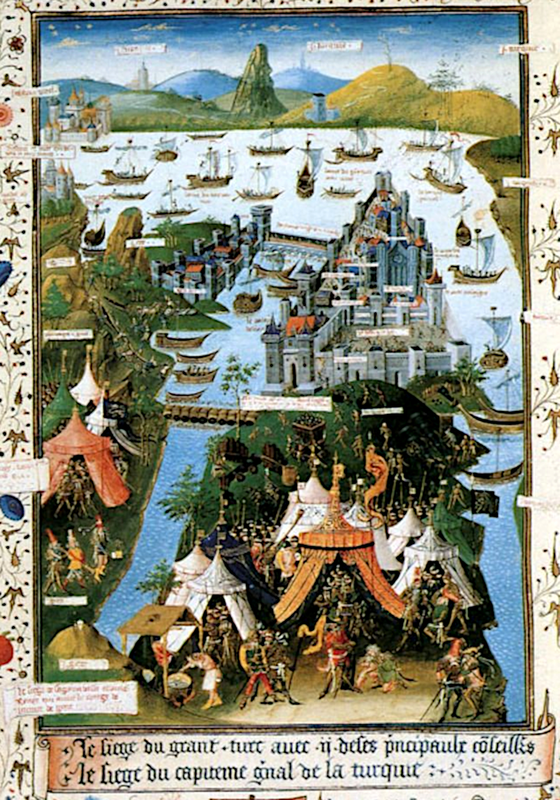
Source
Jean Le Tavernier : Miniature "The siege of Constantinople in 1453" - made in Lille in 1455, in manuscript : "Advis directif pour faire le passage d'oultre-mer", translator: Jean Miélot., Siege of Constantinople BnF MS Fr 9087, Wikimedia Commons. Licence : Domaine public.Constantinople, située stratégiquement à l'entrée de la mer Noire, possède un port par lequel passent tous les navires européens qui se rendent en Asie. La noblesse européenne prisait énormément les épices, comme le poivre, les vêtements de soie et les pierres précieuses qui transitaient par cette ville.
En 1453, les Turcs de l'Empire ottoman, sous le sultan Mehmet II, prennent possession de Constantinople. Fortement protégée grâce à ses fortifications, à la Corne d'Or et à l'utilisation du feu grégeois, la ville était réputée imprenable. Néanmoins, Mehmet II a su contourner la Corne d'Or en faisant glisser ses navires à travers la forêt, sur des billots de bois enduits d'huile d'olive. Le siège de Constantinople a donc débuté et les 8000 soldats byzantins n'ont pu stopper l'armée du sultan, forte de plusieurs dizaines de milliers d'hommes.
Une conséquence majeure pour le commerce
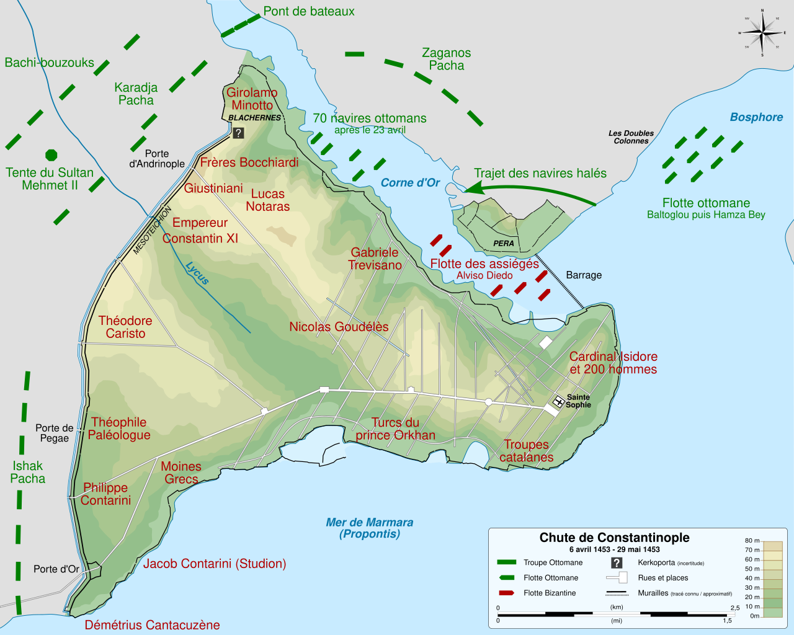
Source
Sémhur ( talk ), Siege of Constantinople 1453 map-fr, Wikimedia Commons. Licence : Creative Commons BY-SA 4.0.En prenant le contrôle de ce passage, les Turcs imposent dorénavant des taxes sur les produits importés et exportés. Elles étaient si élevées que les profits des marchands diminuaient. Ainsi, les Européens commencent à chercher une nouvelle route vers l'Asie, en passant par l'océan Atlantique ou en tentant de contourner l'Afrique. Nous pouvons donc constater que :
- le passage vers l'Asie, bien que possible, coûte cher aux marchands qui désirent importer des produits de luxe vers l'Europe;
- le désir de trouver une nouvelle route vers l'Asie apparaît.
Les innovations techniques au service des explorateurs
Sans progrès techniques, aucune de ces expéditions n'aurait été possible. Quatre innovations changent tout.
La caravelle Navire utilisé par les Portugais et les Espagnols, facile à manoeuvrer grâce au gouvernail d'étambot. C'est l'embarcation préférée des navigateurs pour l'exploration des nouveaux territoires.
L'astrolabe C'est un instrument qui donne la latitude exacte où l'on se trouve, grâce à l'angle formé par l'horizon et un corps céleste. Il donne également l'heure, le jour comme la nuit.
La boussole Une boussole est un instrument de navigation constitué d'une aiguille magnétisée qui s'aligne sur le champ magnétique de la Terre. Elle indique ainsi le nord magnétique et, par le fait même, l'est, le sud et l'ouest.
Le portulan Un portulan est une sorte de carte de navigation, utilisée du 13e au 18e siècle. Elle sert essentiellement à repérer les ports, mais aussi à connaître les dangers présents près des côtes : courants, hauts-fonds, etc.
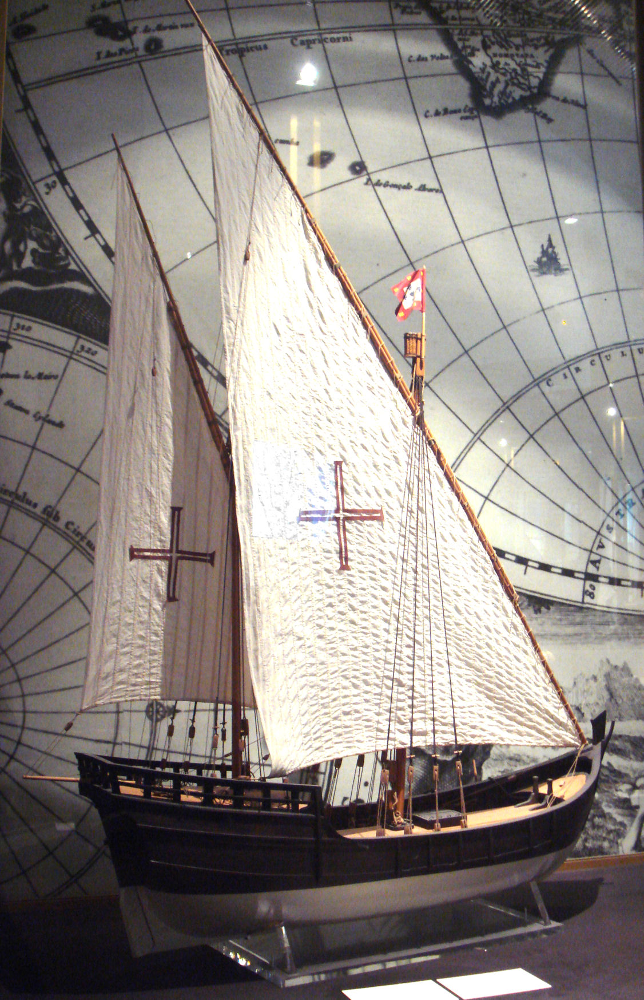
Source
PHGCOM, Portuguese Caravel, Wikimedia Commons. Licence : Creative Commons BY-SA 3.0.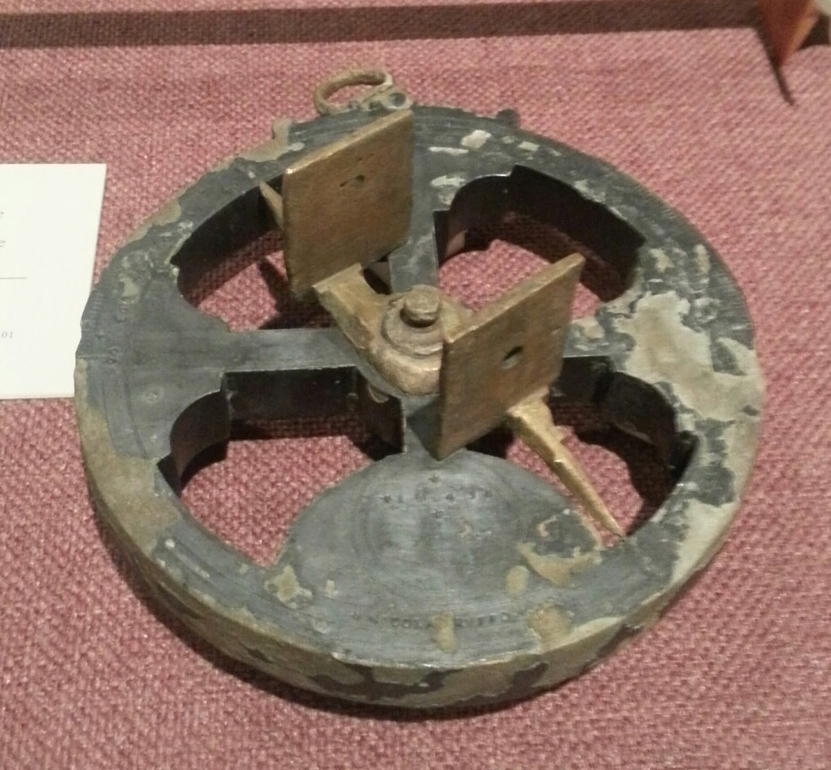
Source
Neochichiri11, Silver-plated Mariner's Astrolabe, Wikimedia Commons. Licence : Creative Commons Zero.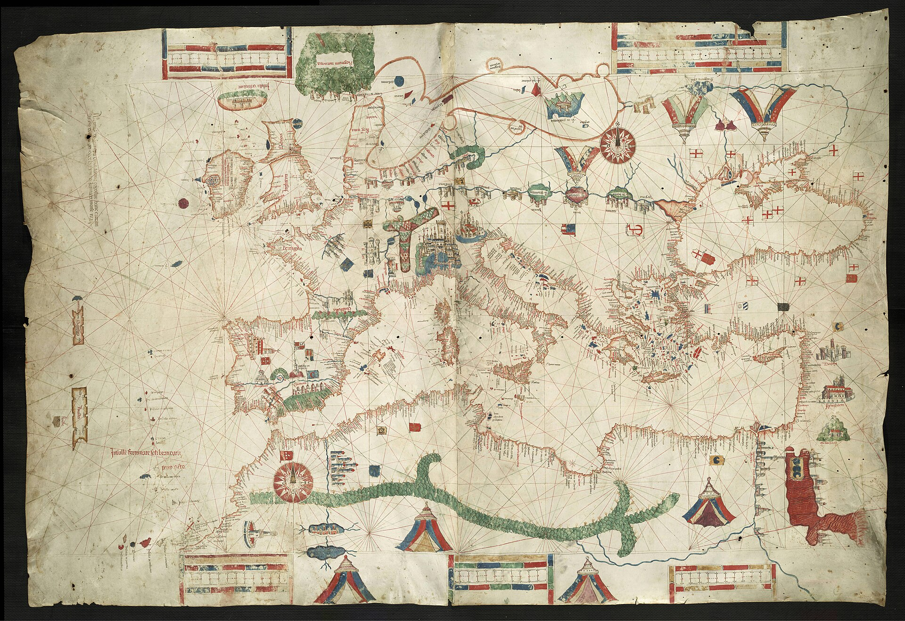
Source
Albino de Canepa, Portolan chart by Albino de Canepa 1489, Wikimedia Commons. Licence : Domaine public.Des acteurs aux motivations diverses
Les motivations qui poussent les Européens à explorer de nouvelles routes maritimes et de nouveaux territoires sont nombreuses. Ces motivations sont d'origine économique, religieuse ainsi que politique.
La motivation économique Ce sont d'abord des raisons économiques qui poussent les empires coloniaux à se lancer dans de grandes explorations. Le commerce des métaux précieux, des épices et de la soie enrichit plusieurs pays européens. Ces produits proviennent entre autres de l'Asie. Les nombreux conflits en Afrique du Nord et la prise de Constantinople par les Turcs en 1453 poussent plusieurs pays à chercher une solution afin de continuer à faire du commerce.
La motivation religieuse Les Européens ont aussi des motivations religieuses. À partir de la découverte de nouveaux territoires, ils s'aperçoivent que la religion chrétienne n'est pas répandue partout dans le monde. Les autorités religieuses se donnent alors comme mission d'évangéliser les peuples qui ne sont pas chrétiens.
La motivation politique Politiquement, les royaumes de l'époque accumulent beaucoup de pouvoir et de prestige en détenant une grande quantité de territoires autour du monde. Le désir d'expansion des grands États européens est donc bien réel et représente une motivation politique des grandes explorations.
Source : Alloprof
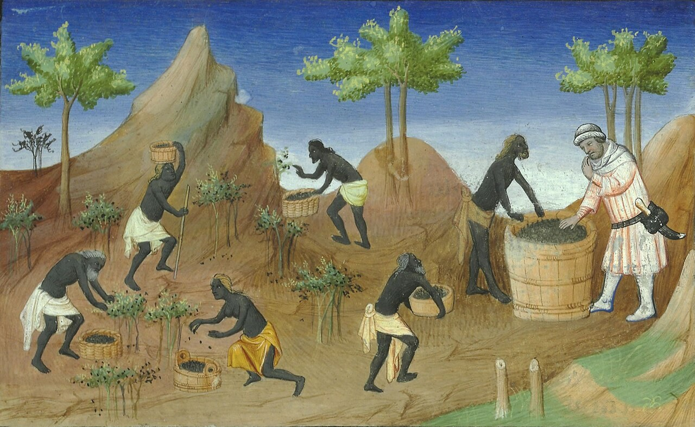
Source
Maître de Boucicaut et Maître de Mazarine, Le livre des merveilles de Marco Polo-pepper, Wikimedia Commons. Licence : Domaine public.Source
Wilhelm Lamprecht, Pere Marquette, Wikimedia Commons. Licence : Domaine public.Source
anonymous, Ferdinand of Aragon, Isabella of Castile, Wikimedia Commons. Licence : Domaine public.Les explorateurs et leurs découvertes
Dès la fin des années 1400 et pendant plus d'un siècle, la connaissance de la géographie de la Terre a progressé à pas de géant. Christophe Colomb, Jean Cabot et Amerigo Vespucci ont fait entrer les Amériques dans l'histoire. Vasco de Gama a été le premier navigateur européen à atteindre l'Asie par l'océan Indien. Quant à Fernand de Magellan et Francis Drake, ils ont successivement fait le tour du globe par la mer.
Au cours de ce siècle d'exploration à travers le monde, des peuples différents se sont rencontrés pour la première fois. Certaines alliances ont vu le jour, le commerce s'est développé, des conflits ont éclaté et l'esclavage est apparu. Ces rencontres ont posé les jalons de notre monde moderne et globalement interdépendant.
Les explorateurs des Grandes découvertes et leurs voyages
Choisis un explorateur, puis suis son voyage
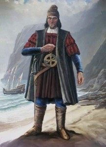
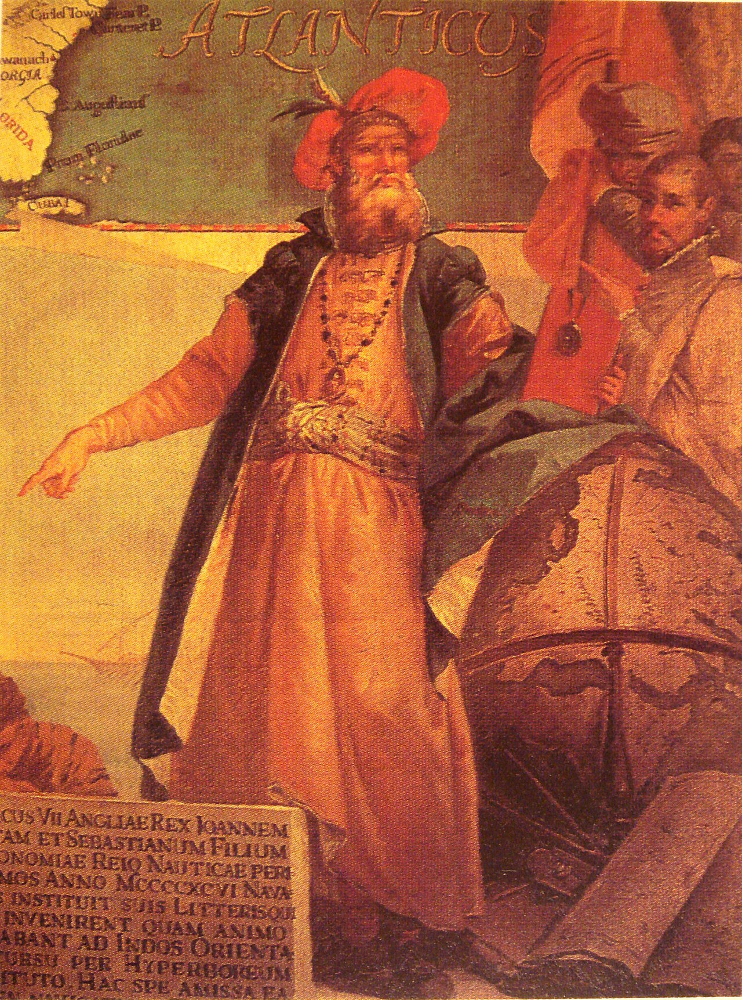
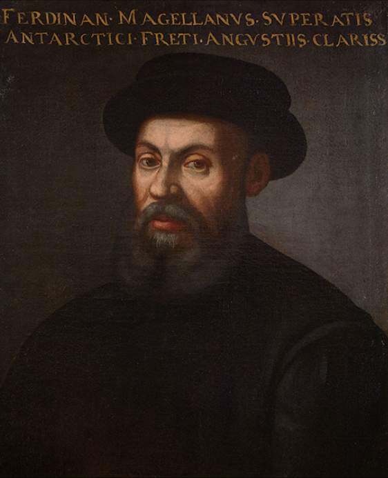
Tracés approximatifs : ils relient des escales datées par des routes plausibles, surtout en haute mer. Quand les sources ne s'entendent pas sur une date, la fiche donne seulement le mois, la saison ou l'année. Le lieu où Cabot a touché terre reste incertain. Les frontières d'aujourd'hui sont en pointillé pour se repérer. Fond de carte : Natural Earth, domaine public.Sources : fiche de notes « Les grands explorateurs »; Dictionnaire biographique du Canada (Jacques Cartier); L'Encyclopédie canadienne (Jacques Cartier, Stadaconé); Encyclopædia Britannica (Christophe Colomb); Wikipédia (expédition de Magellan, flotte de Cabral); Catholic Encyclopedia (Cabral).
Les conséquences des Grandes explorations
Le traité de Tordesillas de 1494
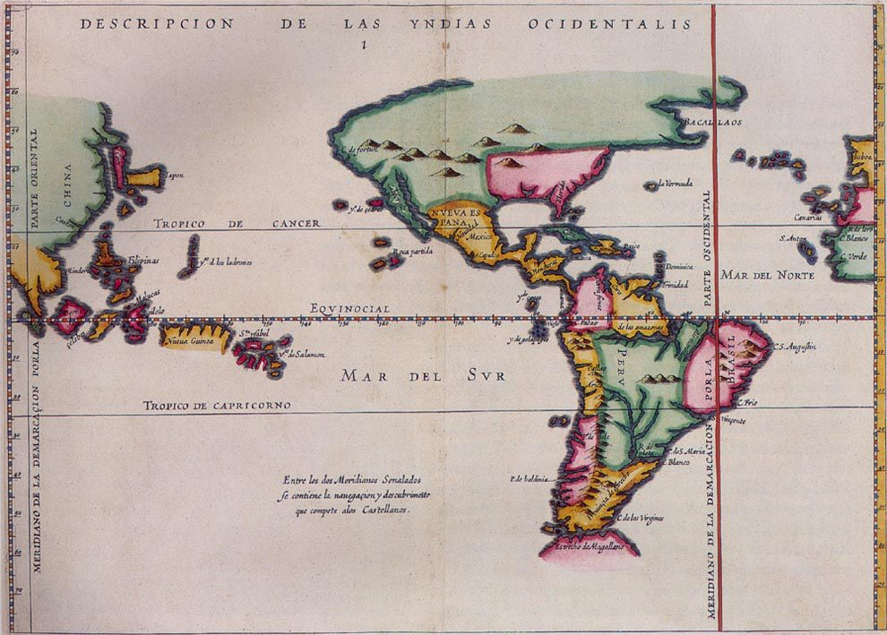
Source
Map by Antonio de Herrera y Tordesillas, Map of Meridian Line set under the Treaty of Tordesillas, Wikimedia Commons. Licence : Domaine public.Après l'arrivée de Christophe Colomb aux Antilles, l'Espagne et le Portugal sont en concurrence pour la colonisation du Nouveau Monde. En 1493, la bulle Inter caetera du pape Alexandre VI stipule que les terres se trouvant à l'ouest d'un méridien passant à cent lieues des îles du Cap-Vert reviennent aux Espagnols, et celles se trouvant à l'est reviennent au Portugal.
Le roi Jean II de Portugal, s'estimant lésé par cette décision, demande que la limite soit repoussée. Finalement, le traité de Tordesillas lui accorde que les terres se trouvant à 370 lieues des îles du Cap-Vert soient sous contrôle portugais. En 1500, le navigateur portugais Pedro Alvares Cabral atteint le Brésil : conformément au traité, sa partie orientale revient aux Portugais. Mais au début du 16e siècle, les mesures étaient peu fiables, et l'on ne savait pas jusqu'où allaient les terres du continent sud-américain. L'Espagne n'a pas pu empêcher la progression de la colonisation portugaise du Brésil bien au-delà de la limite fixée.
(Source : Futura sciences)
Le partage du monde : le traité de Tordesillas
Suis le récit ou fais glisser le temps
Union ibérique, de 1580 à 1640 : un même roi règne sur l'Espagne et le Portugal.
Tous les lieux de la carte
Fond de carte : Natural Earth, domaine public. La ligne de 1494 est tracée à 46° 37' ouest, la position la plus souvent retenue aujourd'hui; celle de 1493 est approximative. Chaque point marque l'emplacement d'une ville, d'un fort ou d'un événement. Les trajets des voyages, montrés à l'aller seulement, sont approximatifs, surtout en haute mer.
Les conséquences linguistiques, encore visibles aujourd'hui
Le traité de Tordesillas permet à l'Espagne de coloniser la majeure partie du continent sud-américain, alors que le Portugal ne peut coloniser que le territoire équivalent au Brésil moderne. L'Angleterre, la France ainsi que les Pays-Bas possèdent également des colonies en Amérique du Sud. Il est également possible de constater une conséquence actuelle de ce traité : la langue maternelle des habitants de l'Amérique du Sud est aujourd'hui déterminée, en grande partie, par ce partage. C'est pourquoi on parle portugais au Brésil et espagnol dans la plupart des pays voisins.
Les impacts économiques des Grandes explorations
L'objectif des Espagnols
Entre 1492 et le milieu du 16e siècle, les Antilles, l'Amérique centrale, la Californie, le Texas et une majeure partie de l'Amérique du Sud sont conquises par les Espagnols, avec très peu de moyens humains et de matériel. Cette expansion se fait en trois étapes : d'abord l'établissement aux Antilles, ensuite la conquête du Mexique avec la prise de Mexico en 1521 et l'établissement de la Nouvelle-Espagne, et enfin la conquête de l'Empire inca, du Pérou, à partir de 1531.
On oublie souvent que Christophe Colomb est d'abord un explorateur minier. Il part à la conquête de Cipangu, comme on appelait le Japon, dont Marco Polo avait vanté la richesse en or et en argent. Il explore ensuite l'île d'Hispaniola et constate l'existence d'exploitations artisanales de l'or dans les rivières. Comme ses contemporains, il croit l'or lié au soleil et écrit : « À en juger par la grande chaleur que je souffre, il faut que le pays soit riche en or. »
L'importation d'or en provenance des Amériques est alors d'environ 1,6 tonne par an, tout au long de la décennie 1493 à 1502. L'or sert principalement à frapper de la monnaie, ce qui relance l'économie européenne. Une fois les placers d'Hispaniola épuisés, la plupart des aventuriers espagnols s'éloignent vers l'ouest : c'est l'or des Caraïbes qui va servir à financer le reste de la conquête de l'Amérique.
(Source du texte : Michel Jébrak, Des mines et des empires. Une sage géopolitique des ressources minérales, Éditions Multimondes, 2024, pages 95-97)
Les mines de Potosí
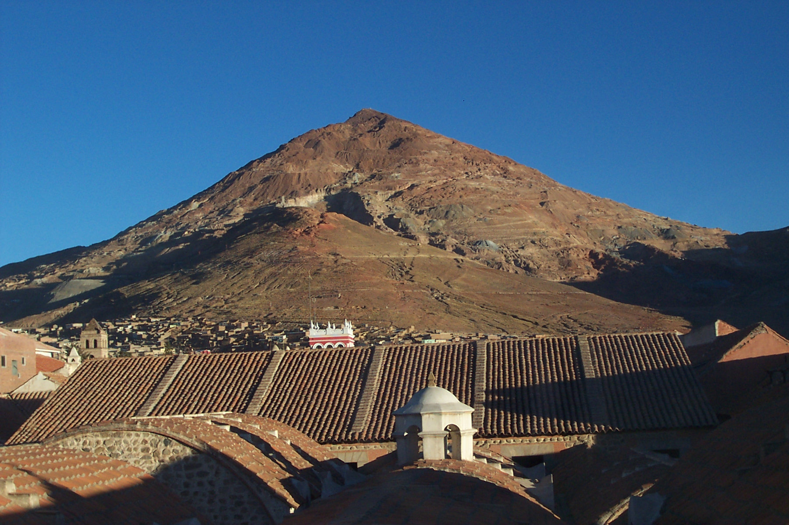
Source
Mhwater at Dutch Wikipedia, Cerro ricco, Wikimedia Commons. Licence : Domaine public.L'argent commence à être exploité à Potosí douze ans seulement après la conquête espagnole de l'Empire inca. À partir de 1545, ce sont plus de 30 000 tonnes d'argent qui sont extraites du Cerro Rico et directement envoyées vers l'Europe. Le minerai est extrait par le travail forcé des Autochtones et des esclaves en provenance de l'Afrique. La ville devient rapidement la plus peuplée d'Amérique derrière Mexico, avec près de 200 000 habitants : à l'époque, elle dépasse Londres, Paris, Rome ou Séville.
Des milliers de travailleurs meurent des suites de problèmes respiratoires causés par la poussière dans les mines, bloqués après des éboulements ou en raison des mauvais traitements. On dit que la quantité d'argent extraite des mines de Potosí aurait suffi à construire un pont au-dessus de l'Atlantique pour relier Potosí à l'Espagne, mais que les ossements des mineurs morts dans des accidents y auraient suffi également.
La mise en place du commerce triangulaire
Avant de recourir aux esclaves africains, les colons espagnols forcent les habitants autochtones à travailler dans les mines et sur les plantations agricoles. Les pratiques agricoles visent d'abord et avant tout la rentabilité économique. Les colons développent donc de plus en plus de grandes plantations de canne à sucre et ont rapidement besoin de main-d'oeuvre en très grande quantité. Toutefois, les Autochtones recrutés meurent rapidement, soit parce qu'ils ont contracté une maladie mortelle, soit parce qu'ils ont succombé aux lourdes tâches physiques qu'ils devaient accomplir.
Le commerce triangulaire se développe alors entre les colonies européennes en Amérique, les métropoles européennes et l'Afrique. Les métropoles européennes exploitent, dans les colonies, plusieurs ressources naturelles de grande valeur : sucre, tabac, rhum, café, minéraux. L'Europe envoie des armes, des tissus et de l'alcool en Afrique en échange d'esclaves. Ces derniers sont alors expédiés dans les colonies afin d'y exploiter la canne à sucre, les métaux ainsi que le tabac.
Il faut comprendre, dans ce commerce triangulaire, qu'il n'y a que la métropole européenne qui tire des profits. Elle cherche à augmenter sa puissance et son prestige face aux autres royaumes européens : c'est ce qu'on appelle le mercantilisme.
(Source : Alloprof)
Explore la carte pour suivre les navires, un côté du triangle à la fois. Clique ensuite sur un port pour découvrir son rôle dans la traite.
Le commerce triangulaire, du 16e au 19e siècle
Suis les étapes ou clique sur un port
- Côté 1 : des marchandises vers l'Afrique
- Côté 2 : des captifs vers l'Amérique
- Côté 3 : des produits vers l'Europe
- Ports d'Europe, d'Afrique et d'Amérique
Un commerce en trois côtés
Pendant plus de trois siècles, des navires européens font le tour de l'océan Atlantique. Ils apportent des marchandises en Afrique. Ils y achètent des captifs, qu'ils emmènent de force dans les colonies d'Amérique. Ils reviennent en Europe chargés des produits des plantations.
On appelle ce circuit le commerce triangulaire. Il repose sur la traite : le commerce de personnes réduites en esclavage.
- 12,5 millionsde personnes embarquées de force en Afrique
- 10,7 millionsde personnes débarquées de l'autre côté de l'océan
- 1,8 millionde personnes mortes en mer : c'est l'écart entre ces deux nombres
Estimations de la base de données Slave Voyages.
- Suis les trois côtés du triangle avec le bouton Étape suivante.
- Clique sur un port, sur la carte ou dans la liste, pour en savoir plus.
Le savais-tu? Le mot « triangulaire » simplifie la réalité. Près de 4 captifs sur 10 arrivent en Amérique sur des navires partis d'Amérique, sans passer par l'Europe.
Des marchandises contre des captifs
Les navires partent des grands ports d'Europe, comme Liverpool, Nantes, Bordeaux ou Lisbonne. Leurs cales sont pleines de marchandises : des tissus, souvent des cotonnades venues de l'Inde, des armes, de la poudre, de l'eau-de-vie, du vin et des barres de fer.
Sur la côte de l'Afrique, les capitaines échangent ces marchandises contre des captifs. Beaucoup sont des prisonniers de guerre, vendus aux Européens par des royaumes africains, comme celui de Ouidah.
En attendant un navire, les captifs restent parfois des mois enfermés dans les cachots des forts de la côte.
Dans les cales, à l'aller- Tissus
- Armes et poudre
- Eau-de-vie et vin
- Barres de fer
- 43 %des expéditions de traite françaises du 18e siècle partent de Nantes
- 1,5 millionde captifs transportés par les navires de Liverpool, de 1700 à 1807
Pourquoi les navires ne partent-ils pas d'Europe les cales vides?
Les marchandises servent à payer les captifs sur la côte de l'Afrique. Aucun trajet ne se fait à vide : chaque côté du triangle doit rapporter de l'argent à ceux qui ont financé le voyage.
La traversée de l'Atlantique
Les captifs sont entassés dans les cales des navires négriers, souvent enchaînés. On appelle ce trajet le passage du milieu.
Beaucoup n'arrivent pas vivants. Avant 1700, environ 2 captifs sur 10 meurent en mer. Au milieu du 18e siècle, c'est environ 1 sur 10.
Dans les colonies, les survivants sont vendus aux propriétaires de plantations et de mines.
D'où partent les captifs?
Total : environ 12,5 millions de personnes
Où arrivent-ils en Amérique?
Total en Amérique : environ 10,5 millions de personnes
Environ 160 000 autres personnes débarquent en Afrique ou en Europe.
Compare les deux graphiques. Pourquoi le total des arrivées est-il plus petit que celui des départs?
Parce que des captifs meurent pendant la traversée. L'écart entre les départs et les arrivées est d'environ 1,8 million de personnes.
Les produits des plantations
Dans les colonies, les personnes réduites en esclavage travaillent de force dans les plantations de canne à sucre, de café, de coton ou de tabac, ou dans les mines.
Les navires rapportent en Europe le sucre, le café, le cacao, le coton, l'indigo et le tabac. Ces produits enrichissent les marchands et les ports d'Europe. Dans les années 1770 et 1780, 45 % des importations des colonies françaises arrivent par Bordeaux.
C'est le principe du mercantilisme : la colonie fournit des richesses, la métropole s'enrichit.
Dans les cales, au retour- Sucre
- Café
- Coton
- Tabac
- Cacao
- Indigo
- 500 000personnes réduites en esclavage à Saint-Domingue vers 1789, sur 600 000 habitants
- près de 1 millionde captifs africains débarqués en Jamaïque
Qui profite de ce commerce? Qui en paie le prix?
Les marchands et les métropoles d'Europe s'enrichissent. Les captifs africains et leurs descendants en paient le prix : ils perdent leur liberté, souvent leur vie.
Le Brésil, en droite ligne
Le Brésil reçoit à lui seul près de la moitié des captifs débarqués en Amérique.
Pourtant, son commerce n'a rien d'un triangle. Environ 9 captifs sur 10 arrivés au Brésil ont voyagé sur des navires partis du Brésil. Ces navires font l'aller-retour entre le Brésil et l'Afrique, sans passer par l'Europe.
Ils emportent vers l'Afrique de l'eau-de-vie de canne, la cachaça, du tabac et de l'or. Ils les échangent contre des captifs, notamment à Luanda et dans le golfe du Bénin.
Dans les cales, vers l'Afrique- Cachaça
- Tabac
- Or
- 4,9 millionsde captifs débarqués au Brésil
- près de 4 sur 10captifs arrivés en Amérique sur des navires partis d'Amérique
Pourquoi parle-t-on quand même de commerce triangulaire?
Parce que c'est le circuit des navires européens, partis de Nantes, de Bordeaux ou de Liverpool. Mais une grande partie de la traite suivait d'autres routes, comme celle du Brésil.
Des sociétés transformées pour longtemps
L'Afrique perd des millions de personnes : 12,5 millions sont déportées en plus de trois siècles.
En Amérique, des colonies entières reposent sur le travail des personnes réduites en esclavage. À Saint-Domingue, elles se révoltent en 1791. Leur lutte mène à l'indépendance d'Haïti, le premier État noir indépendant.
En Europe, les ports de la traite s'enrichissent. Peu à peu, la traite puis l'esclavage sont interdits.
- 1794La France abolit l'esclavage dans ses colonies. Napoléon le rétablit en 1802.
- 1807Le Royaume-Uni interdit la traite.
- 1834L'esclavage prend fin dans l'Empire britannique.
- 1848La France abolit définitivement l'esclavage, par un décret préparé par Victor Schœlcher.
- 1888Le Brésil abolit l'esclavage. C'est le dernier pays des Amériques à le faire.
Aujourd'hui, Liverpool a un musée international de l'esclavage. À Bordeaux, le musée d'Aquitaine consacre des salles à la traite. Pourquoi ces villes veulent-elles se souvenir de ce passé?
Parce qu'une partie de leur richesse vient de la traite. Se souvenir permet de reconnaître les victimes et de comprendre des inégalités qui durent encore.
La capitale de la traite britannique
De 1700 à 1807, les navires de Liverpool transportent environ 1,5 million d'Africains. C'est la moitié de toute la traite britannique. Dans les dernières années, 8 voyages de traite britanniques sur 10 partent de ce port. Le Royaume-Uni interdit la traite en 1807.
Aujourd'hui, le Musée international de l'esclavage de Liverpool raconte cette histoire.
Le premier port de traite de France
Au 18e siècle, 43 % des expéditions de traite françaises partent de Nantes. La France interdit la traite en 1815. Des navires nantais continuent pourtant ce commerce en cachette jusqu'en 1831.
Le grand port des produits des Antilles
De 1672 à 1837, environ 500 expéditions de traite partent de Bordeaux. Elles déportent de 130 000 à 150 000 captifs. Bordeaux s'enrichit surtout des produits des colonies : dans les années 1770 et 1780, 45 % des importations des colonies françaises y arrivent.
Aujourd'hui, le musée d'Aquitaine consacre des salles à la traite et à l'esclavage.
Les premiers comptoirs en Afrique
Les Portugais construisent le fort d'Elmina en 1482 : c'est le premier comptoir européen du golfe de Guinée. Plus tard, la plupart des captifs emmenés au Brésil voyagent pourtant sur des navires partis du Brésil plutôt que de Lisbonne.
Un fort pour l'or, puis pour les captifs
Les Portugais bâtissent ce fort en 1482 pour le commerce de l'or. Les Néerlandais s'en emparent en 1637. Il passe aux Britanniques en 1872. Dans les forts de cette côte, les captifs attendent parfois des mois, enfermés dans des cachots.
C'est l'un des plus vieux bâtiments européens hors d'Europe. Il est inscrit au patrimoine mondial de l'UNESCO.
Un port conquis par le Dahomey
Ouidah appartient au royaume de Whydah, que le roi Agaja du Dahomey conquiert en 1727. Les guerres de ces royaumes fournissent des captifs, vendus aux Européens. Environ 2 millions de captifs partent du golfe du Bénin.
Aujourd'hui, la Route des esclaves mène de la ville à la plage, jusqu'à un monument appelé la Porte du non-retour.
Un royaume qui contrôle son commerce
Le royaume de Loango contrôle son commerce avec les Européens. Il refuse qu'ils s'installent pour de bon sur sa côte. Des marchands néerlandais, français et britanniques y achètent des captifs. De 1811 à 1867, environ 1,3 million de personnes partent encore des ports de cette côte.
Depuis 2008, le port d'embarquement de Loango figure sur la liste indicative du patrimoine mondial de l'UNESCO.
La porte vers le Brésil
Les Portugais fondent Luanda en 1576. La ville devient le centre de la traite vers le Brésil, jusqu'à son interdiction en 1836. En 1751, on y vend de 5 000 à 10 000 captifs par année. Les navires brésiliens sont les plus nombreux dans son port.
L'Afrique centrale de l'Ouest, où se trouvent Loango et Luanda, voit partir 5,7 millions de captifs : près de la moitié du total.
La colonie la plus riche de France
Vers 1789, Saint-Domingue compte environ 600 000 habitants, dont 500 000 personnes réduites en esclavage. Ses plantations de café et de canne à sucre en font la colonie française la plus prospère. Dans la nuit du 22 au 23 août 1791, une immense révolte éclate. Elle mène à l'indépendance d'Haïti.
L'île du sucre britannique
Les Anglais prennent la Jamaïque aux Espagnols en 1655. Dans la seconde moitié du 17e siècle, les planteurs y développent la canne à sucre. L'île reçoit près d'un million de captifs africains. Une grande révolte, en 1831, aide à convaincre le Parlement britannique d'abolir l'esclavage en 1834.
La première capitale du Brésil
Salvador est la capitale du Brésil jusqu'en 1763. Ses marchands achètent des captifs dans le golfe du Bénin, notamment à Ouidah. Leurs navires font l'aller-retour sans passer par l'Europe.
Le quai de Valongo
En 1763, Rio remplace Salvador comme capitale : l'or du Minas Gerais en fait le grand port du Brésil. À partir de 1811, les captifs débarquent au quai de Valongo. Jusqu'à 900 000 Africains seraient arrivés en Amérique par ce quai.
Les vestiges du quai sont inscrits au patrimoine mondial de l'UNESCO : ce sont les plus importants d'un lieu d'arrivée des captifs en Amérique.
Départs et arrivées des captifs : estimations de la base de données Slave Voyages, citées par G. Bertocchi (2016). Les autres faits viennent des sources de la fiche. Fond de carte : Natural Earth. Les routes sont simplifiées.
La traite des esclaves
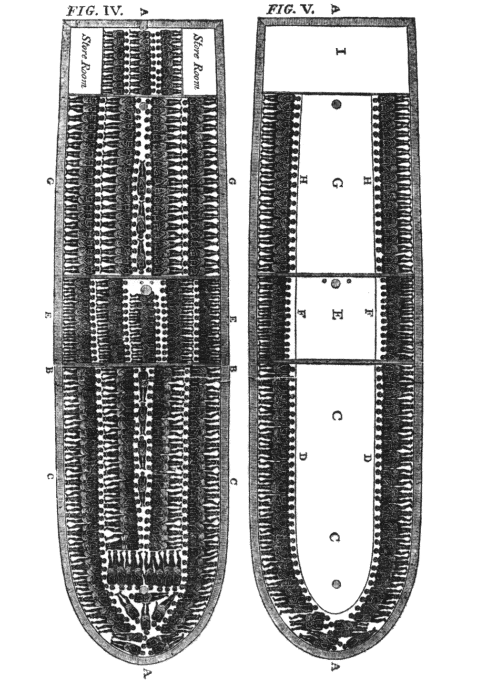
Source
Unknown author Unknown author, Slave ship diagram, Wikimedia Commons. Licence : Domaine public.Les navires marchands qui servaient au transport d'esclaves s'appellent négriers. Ces navires étaient conçus pour transporter aussi bien les marchandises que les groupes d'esclaves. Les navires en provenance de l'Europe effectuaient un premier arrêt sur les côtes africaines. C'est là que les marchands échangeaient des biens contre des personnes réduites en esclavage. Environ 600 d'entre elles étaient d'abord marquées au fer rouge, puis enchaînées dans les cales des navires. Elles y étaient entassées, sans lit, sans eau, sans toilette et sans réelle possibilité de mouvement. La traversée de l'Atlantique durait en moyenne un peu plus de deux mois. Les plus courtes, depuis les côtes d'Afrique les plus proches de l'Amérique, prenaient environ trois semaines. Pendant ce temps, tant les esclaves que les membres de l'équipage succombaient aux conditions de vie éprouvantes. Le taux de mortalité chez les esclaves était d'environ 10 % à 20 %.
Les maîtres ne les ont jamais réellement traités avec pitié ou compassion. Ces sentiments étaient jugés inutiles puisque les esclaves n'étaient tout simplement pas considérés comme des humains. Pour les propriétaires des plantations, ils n'étaient qu'une marchandise parmi d'autres. Dès leur sélection à bord du navire, les familles pouvaient être séparées en tout temps. Les esclaves habitaient sur les terres de leurs maîtres et vivaient dans de petites maisons sans meuble dans lesquelles le sol servait de lit.
(Source : Alloprof)
Les peuples autochtones
Lorsque les Européens arrivent sur le continent américain pour la première fois, ils croient être arrivés en Inde par une nouvelle route. C'est pourquoi, quand ils entrent en contact avec les habitants du nouveau continent, ils les appellent Indiens. Plus tard, lorsqu'ils réalisent qu'ils ont débarqué en Amérique et non en Inde, ils changent le terme pour Amérindiens.
Avant l'arrivée des Européens, il existait déjà des civilisations bien implantées sur le territoire de l'Amérique. On assiste donc à un véritable choc culturel. Alors qu'au nord de l'Amérique, près du Canada actuel, ce sont les Iroquoiens et les Algonquiens qui habitent le territoire, plus au sud, dans l'Amérique centrale et l'Amérique du Sud actuelles, les Aztèques et les Incas se partagent la région.
(Source : Alloprof)
Hernán Cortés et l'Empire aztèque
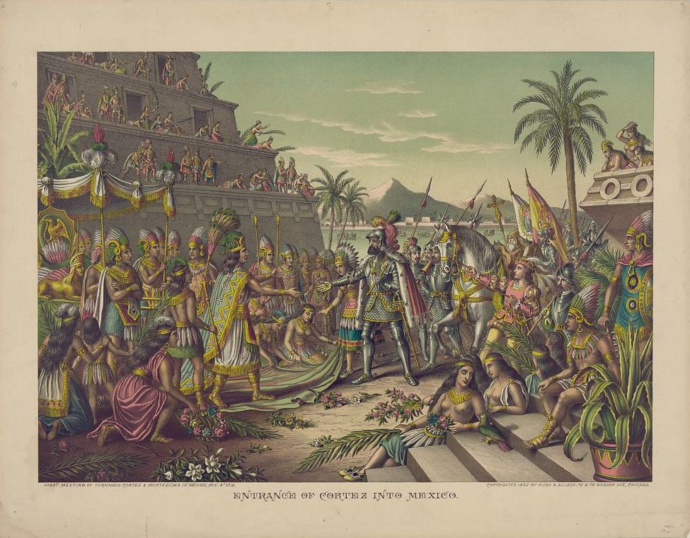
Source
Kurz & Allison, Cortes y moctezuma, Wikimedia Commons. Licence : Domaine public.Après les voyages de Christophe Colomb, c'est au tour des conquistadors espagnols et des explorateurs portugais de partir vers les Amériques afin de trouver l'or, l'argent et de nouvelles ressources naturelles, à défaut d'épices. L'obsession pour l'or, amplifiée par le mythe de l'Eldorado, entraîne les conquérants espagnols très loin en Mésoamérique et en Amérique du Sud, où ils entrent en contact, mais aussi en confrontation, avec les civilisations déjà établies.
Cortés souhaite mettre la main sur les richesses du puissant Empire aztèque qui domine les régions qu'il visite. Il sollicite une rencontre avec l'empereur Moctezuma II, qui choisit de le faire patienter plus de huit mois avant de le recevoir. Pendant ce temps, il rencontre ses ambassadeurs, qui lui apportent des objets en or. Cortés les impressionne avec ses chevaux et ses armes à feu, mais sa trop grande assurance ne plaît pas aux diplomates. En attendant son entretien avec l'empereur, il s'allie avec des peuples qui souhaitent se libérer de l'emprise des Aztèques et réussit à conquérir Cholula, la deuxième ville de l'empire, ce qui incite Moctezuma II à consentir à une rencontre le 8 novembre 1519 dans la capitale Tenochtitlan.
Des affrontements entre les Espagnols et les Aztèques entraînent la mort de l'empereur Moctezuma II. Les combats forcent les Espagnols à quitter temporairement Tenochtitlan en 1520, mais ils reviennent l'année suivante avec leurs alliés pour envahir la ville. Hernán Cortés s'empare de la capitale, qu'il renomme Mexico. Il met la main sur les réserves aztèques de métaux précieux. La famine et les épidémies ont raison de la résistance des Aztèques, dont la population est ravagée.
(Source du texte : Evelyne Ferron et Karine Prémont, Le monde depuis le XVe siècle. Une histoire des sociétés en interaction, Fides Éducation, 2024, pages 178-179)
Les conséquences sur les peuples autochtones
Dès leur arrivée sur le territoire américain, les Européens considèrent les habitants comme un peuple inférieur. Ils imposent leur culture, leur mode de vie et leurs croyances aux Autochtones. Ceux qui étaient autrefois nomades sont obligés de se sédentariser. Les Autochtones sont aussi, malheureusement, réduits en esclavage ou exterminés dans de véritables massacres. D'autres fois, ce sont les maladies, contre lesquelles ils n'ont pas développé d'anticorps, qui font des ravages.
Les conséquences des grandes explorations européennes sur les peuples autochtones sont très négatives. Les Européens de l'époque utilisent le territoire américain et sa population comme s'ils les possédaient et ne tiennent pas compte des intérêts des populations déjà en place. Ces populations subissent d'autres conséquences négatives : la perte de leurs territoires, de leur autonomie politique, de leurs richesses naturelles et de leur identité culturelle. En effet, les Européens les obligeaient à parler leur langue et à se convertir à la religion catholique. Elles ont donc subi l'acculturation.
Tenochtitlan elle-même ne survit pas à la conquête. Les Espagnols démolissent ses temples et réutilisent leurs pierres pour bâtir Mexico sur ses ruines. Au fil des siècles, le lac est presque entièrement asséché et les canaux deviennent des rues. Compare la ville de 1518, telle que l'imagine Thomas Kole à partir des sources historiques et archéologiques, et la ville d'aujourd'hui, photographiée par drone sous le même angle.
Tenochtitlan en 1518, Mexico aujourd'hui
Choisis un point de vue, puis fais glisser le curseur
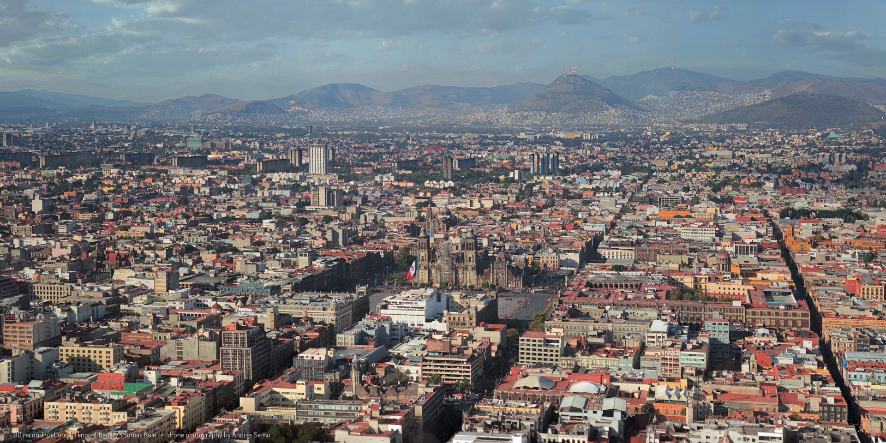
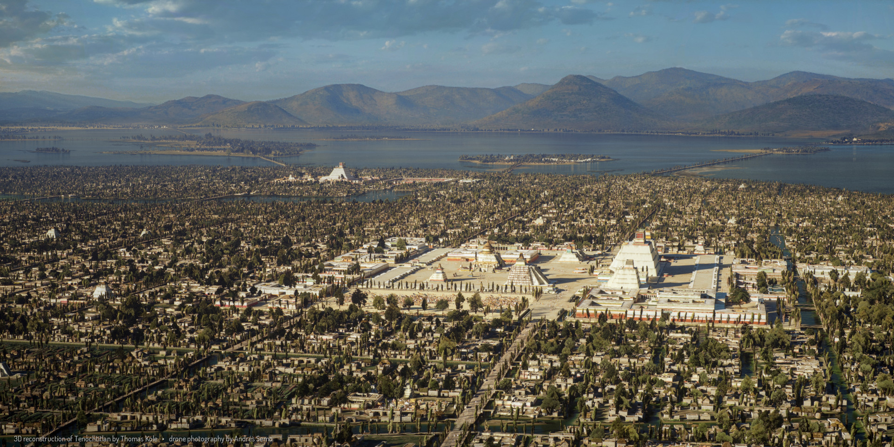
Images à récupérer python outils\images.py
La vue vers le nord
Source
Thomas Kole, Retrato de Tenochtitlan. Licence : Creative Commons BY 4.0.Source
Andrés Semo García (SemoDron), Retrato de Tenochtitlan. Licence : Creative Commons BY 4.0.Des activités pour t'exercer
Sources
- Service national du RÉCIT en univers social
- Alloprof, L'expansion européenne dans le monde
- Futura sciences, Le traité de Tordesillas
- Wikipédia
- Michel Jébrak, Des mines et des empires, Éditions Multimondes, 2024
- Evelyne Ferron et Karine Prémont, Le monde depuis le XVe siècle, Fides Éducation, 2024
- Bertocchi, The legacies of slavery in and out of Africa, IZA Journal of Migration, 2016, tableaux 1 et 2 (base Slave Voyages)
- The Conversation, Transatlantic slave trade was not entirely triangular
- Encyclopædia Universalis, Traite des Noirs : la traversée atlantique
- Gresham College, Liverpool and the slave trade
- Bécédia, Le rôle de Nantes dans la traite atlantique
- Wikipédia, Traite négrière à Bordeaux
- Académie de Bordeaux, Bordeaux et le commerce triangulaire (journal de bord de la Licorne)
- Understanding Slavery Initiative, Slave forts case study
- UNESCO, Forts et châteaux de Volta, d'Accra et ses environs et des régions centrale et ouest
- Wikipédia (en anglais), Elmina Castle
- Wikipédia (en anglais), Ouidah
- Wikipédia (en anglais), Loango Slavery Harbour
- Wikipédia (en anglais), Luanda
- Britannica Kids, Triangular trade
- Revista de História (USP), Atlantic interactions between Salvador and Porto Novo (Costa da Mina) in the eighteenth century
- History Hit, International Slavery Museum
- Au Sénégal, Le musée d'Aquitaine s'ouvre à l'histoire de la traite négrière, 2009
- Hérodote, 22-23 août 1791 : révolte des esclaves à Saint-Domingue
- Slavery and Remembrance, Jamaica
- Hérodote, 31 août 1763 : Rio de Janeiro devient la capitale du Brésil
- UNESCO, Site archéologique du quai de Valongo
- Wikipédia, Abolition de l'esclavage en France
- Wikipédia (en anglais), Lei Áurea
- Lowcountry Digital History Initiative (College of Charleston), The Middle Passage : durée moyenne de la traversée
- Statista, durée et mortalité de la traversée selon la destination, d'après Slave Voyages